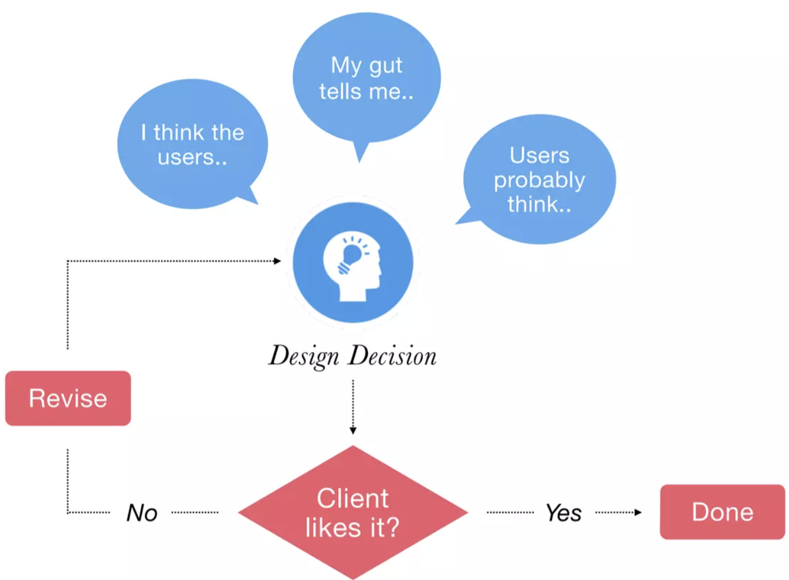
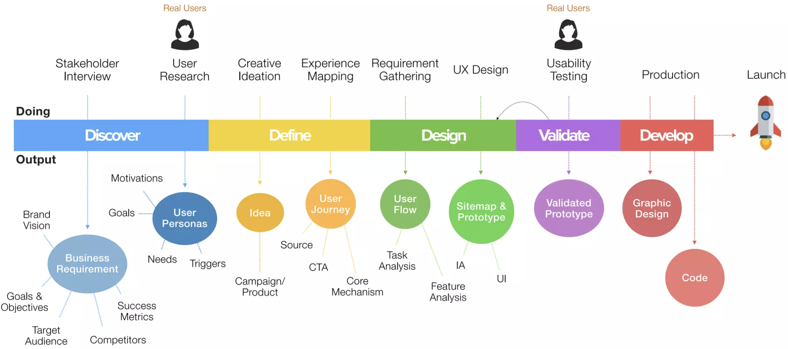
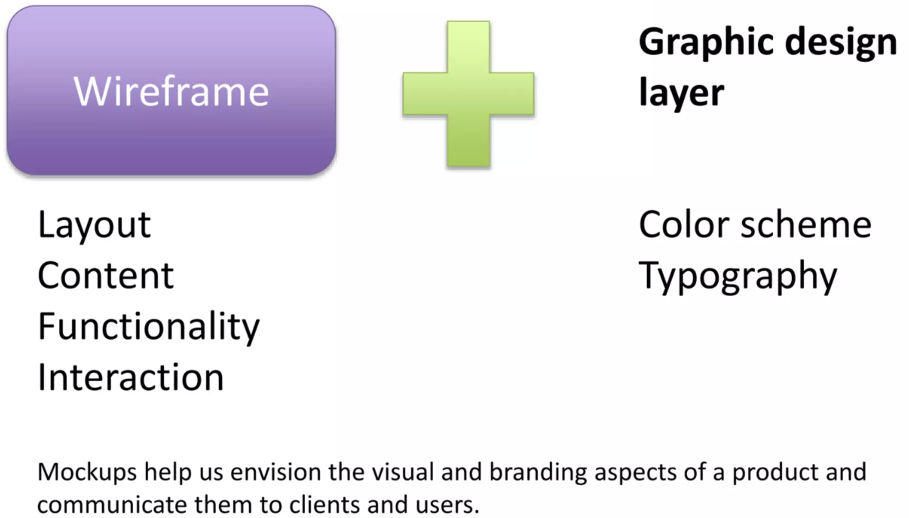

Simply put, user experience is how person feels when they are interacting with your system or product
Fundamentals of UX
We need to understand a few basic rules:
Fundamentals of UX (Cont.)
Fundamentals of UX (Cont.)
Fundamentals of UX (Cont.)
Well, Definitely Not This Way!

User-Centered Design (UCD)
UCD is a multi-stage problem-solving process that not only requires designers to analyse and foresee how users are likely to use a product, but also to test the validity of their assumptions

What is Information Architecture (IA)?
Commonly known as IA, it is the art and science of developing structures and organization to present data & information
If UX is the terrain
Then IA is the map
3 Focus of IA
This is Your Website
Navigation and Labeling
Questions
Why did we put the living room in the middle?
Why is the kitchen near the dining room?
Why did we put the family bedrooms upstairs?
Why is the playroom downstairs?
Revising – Navigation and Labeling
Content Organisation
Everything (now/future) has a place
Information Storage & Retrieval
Where does eating utensils go?
IA Output: Sitemap
IA Output: Sitemap (Cont.)
Draft Product
Sketches
Storyboards Made Out of Hand Sketches
Wireframe
Mockup

Prototype
Why do we need IA?
Findability ~ Information Scent
Is an analogy that compares how humans seek information with animals seeking food
Refers to the extent to which users can predict what’s ahead (in a link or in an article)
Information scents includes titles and links that helps visitors find what they are looking for
Users will feel duped if they don’t get sufficient payoff from going down a path
Information Scent
When Information scent says to the user – YOU’RE GETTING CLOSER!
It helps visitors know that your site is fertile hunting grounds for the things they are looking for
IA Impacts Heavily on Search Engine’s View of Your Site
Search engines index (scan) your site hierarchically
Pages higher in the hierarchy are given more weight
SEO also make note of silos of info and relationships
Well architected site makes information more findable
Sitemaps and Menus that Reflect IA Leads to Greater Findability
Help users know what’s available and find what they are looking for
Tell users where they are within the site
Tell users how to use the site by quickly communicating features